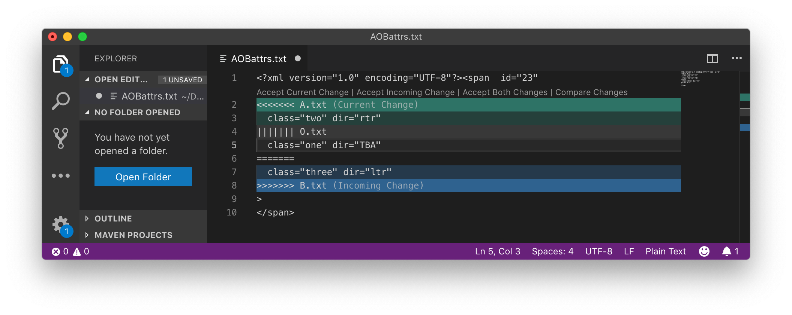

XML attributes present a particular challenge for diff3 format. Here is an example of a change of value for an attribute.
Table 3. XML attribute value change
| A.txt | O.txt | B.txt |
|---|---|---|
<span
class="two"
dir="rtr"
id="23">
|
<span
class="one"
id="23"
dir="TBA">
|
<span
id="23"
class="three"
dir="ltr">
|
This could be represented as shown below. Note here that we are not showing
the result of running 'diff3 -m' but rather we have run an XML-aware comparison
yielding results that we want to express in the diff3 format.
<span id="23" <<<<<<< A.txt class="two" dir="rtr" ||||||| O.txt class="one" dir="TBA" ======= class="three" dir="ltr" >>>>>>> B.txt >
|
Figure 1. Attribute example in Visual Studio code  |
In Figure 1, “Attribute example in Visual Studio code”, we see how this can be displayed and managed in Microsoft Visual Studio code.
The above will produce syntactically correct results, though it is not ideal because it would be more natural to choose the attributes separately rather than as a pair. This separation can be achieved by inserting additional white space so that we get two choices as shown below.
<span id="23" <<<<<<< A.txt class="two" ||||||| O.txt class="one" ======= class="three" >>>>>>> B.txt <<<<<<< A.txt dir="rtr" ||||||| O.txt dir="TBA" ======= dir="ltr" >>>>>>> B.txt >
There is another representation that takes the common attribute name out of the choice, but it may be less easy for a user to see what is happening. This representation is shown below.
<span class= <<<<<<< A.txt "two" ||||||| O.txt "one" ======= "three" >>>>>>> B.txt dir= <<<<<<< A.txt "rtr" ||||||| O.txt "TBA" ======= "ltr" >>>>>>> B.txt >